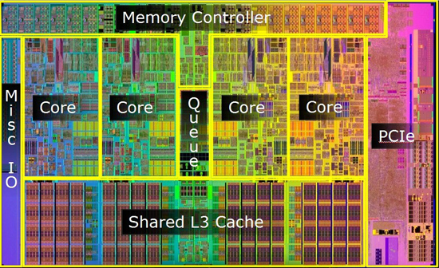
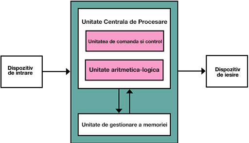

Procesorul este elementul principal al unui sistem de calcul și încorporează funcțiile unității centrale de prelucrare a informației a unui calculator sau a unui sistem electronic structurat funcțional (care coordonează sistemul).
De obicei, fizic procesorul se prezintă sub forma unui microprocesor, care este fabricat pe un singur cip de circuit integrat metal-oxid-semiconductor (MOS). Reprezintă forma structurală cea mai complexă pe care o pot avea circuitele integrate. Cipul semiconductor, care este plasat pe placa de bază, este foarte complex, putând ajunge să conțină milioane de microtranzistoare. El controlează activitățile întregului sistem în care este integrat și poate prelucra datele furnizate de utilizator.
- Unitate aritmetică-logică (UAL) - este responsabilă cu operațiile de calcul aritmetic și/sau logic. Pentru realizarea funcțiilor sale, UAL utilizează registre proprii speciale.
- Unitatea de control (UCC) - este responsabilă de controlul operațiilor efectuate de microprocesor pe baza decodificării instrucțiunilor, comandând toate celelalte componente.
- Unitatea de gestionare a memoriei (MMU) - gestionează toate operațiunile de memorie asociate procesorului, traduce adrese logice în adrese RAM fizice, oferind protecție de memorie și abilități de paging, utile pentru memoria virtuală.
- Registre - Registrele sunt utilizate pentru memorarea temporară a informației cu care lucrează unitatea aritmetică-logică. Un microprocesor are mai multe registre (de uz general, de date, de adrese).